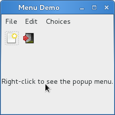

菜单¶
GTK+有两种不同的菜单， Gtk.MenuBar 和 Gtk.Toolbar 。
Gtk.MenuBar 是标准的菜单条，包含一个或多个 Gtk.MenuItem
或其子类的实例。 Gtk.Toolbar 控件用于可以快速地访问应用程序经常使用
的功能，其包含一个多个 Gtk.ToolItem 或其子类的实例。
Actions¶
尽管有相应的API来创建菜单和工具条，你应该使用 Gtk.UIManager 并创建
Gtk.Action 的实例。action被组织为组， Gtk.ActionGroup 实质上就是
从名字到 Gtk.Action 对象的映射。所有要用在某个特定上下文的action都应该
放在一个组中。多个action group可以用于特殊的用户界面，通常非一般的程序会使用多个组。
例如，在一个可以编辑多个文档的应用程序中，一组处理全局的action（如退出、关于、新建），
另一组每文档相关的则处理该文档的action（如保存、剪切/复制/粘贴）。没一个窗口的action
都应该由这两个action group组合而成。
不同的类代表了action不同的种类:
Gtk.Action: 一个可以通过菜单或工具条项目触发的action。Gtk.ToggleAction: 一个可以通过在两种状态间切换触发的action。Gtk.RadioAction: 在一组中只有一个可以激活的action。Gtk.RecentAction: 代表一个最近使用文件的列表的action。
action代表用户可以执行的操作及其如何呈现的一些信息。这些信息包括name（不是用来显示）， label（用于显示），加速键，label是否引用 stock item ，提到信息及 action被激活时的回调函数。
要创建action，你可以直接调用构造函数，或者通过调用 Gtk.ActionGroup.add_action() 或
Gtk.ActionGrou.add_action_with_accel() 或以下便捷函数之一将action加入到action group中：
注意你必须指定菜单项和子菜单的action。
Action 对象¶
-
class
Gtk.Action(name, label, tooltip, stock_id)¶ name 必须唯一。
如果 label 不为
None，将会在菜单项和按钮中显示。如果 tooltip 不为
None，将会用于action的提示信息。如果 stock_id 不为
None，将会用于查找 stock item 代表action在控件中显示。
-
class
Gtk.ToggleAction(name, label, tooltip, stock_id)¶ 参数与
Gtk.Action的构造函数相同。
-
class
Gtk.RadioAction(name, label, tooltip, stock_id, value)¶ 前四个参数与
Gtk.Action的构造函数相同。value 代表当action被选中时
get_current_value()返回的值。-
get_current_value()¶ 获取action所属组中当前激活的项目的 “value” 属性的值。
-
join_group(group_source)¶ radio action对象加入 group_source radio action对象所属的组。
group_source 必须我们要加入的组的一个 radio action 对象。 或者传递
None来将其移除组外。
-
-
class
Gtk.ActionGroup(name)¶ 创建一个新的
Gtk.ActionGroup实例。action group 的名字用于与action关联健绑定。-
add_action(action)¶ 添加一个
Gtk.Action对象到组中。注意本方法不会设置action的加速键，如需要请使用
add_action_with_accel()代替。
-
add_action_with_accel(action, accelerator)¶ 添加一个
Gtk.Action对象到action group中并设置加速键。accelerator 必须是
Gtk.accelerator_parse()可以解析的格式，或者""不设置加速键，或者None使用stock的加速键。
-
add_actions(entries[, user_data])¶ 这是一个便捷函数用来创建多个
Gtk.Action对象并将他们加入到action group中。entries 是一个包含一到六个以下元素的元组的列表：
action的name(必须的)
action 的 stock item (默认为
None)action 的lable (默认为
None)action 的加速键，格式为
Gtk.accelerator_parse()可以识别的格式(默认为None)action 的提示信息。 (默认为
None)action激活时调用的回调函数。(默认为
None)
aciton 的 “activate” 信号会与回调函数连接。
如果 user_data 不为
None，将会传递给毁掉函数（如果回调函数指定）。
-
add_toggle_actions(entries[, user_data])¶ 创建多个
Gtk.ToggleAction对象被添加到本组中的便捷函数。entries 是一个包含一到七个以下元素的元组的列表：
action的name(必须的)
action 的 stock item (默认为
None)action 的lable (默认为
None)action 的加速键，格式为
Gtk.accelerator_parse()可以识别的格式(默认为None)action 的提示信息。 (默认为
None)action激活时调用的回调函数。(默认为
None)一个表示本toggle action是否激活的布尔值。(默认为
False)
aciton 的 “activate” 信号会与回调函数连接。
如果 user_data 不为
None，将会传递给毁掉函数（如果回调函数指定）。
-
add_radio_actions(entries[, value[, on_change[, user_data]]])¶ 创建多个
Gtk.RadioAction并添加到本组中的便捷函数。entries 是一个包含一到六个以下元素的元组的列表：
action的name(必须的)
action 的 stock item (默认为
None)action 的lable (默认为
None)action 的加速键，格式为
Gtk.accelerator_parse()可以识别的格式(默认为None)action 的提示信息。 (默认为
None)radio action 的值 (默认为 0)
value 指定应该被激活的radio action。
如何 on_change 指定，其会被连接到第一个radio action的 “changed” 信号。
如果 user_data 不为
None，将会传递给毁掉函数（如果回调函数指定）。
-
-
Gtk.accelerator_parse(accelerator)¶ 解析代表加速键的字符串。格式类似于 “<Control>a” 或者 “<Shift><Alt>F1” 或者 “<Release>z” (最后一个为按钮释放)。解析器是相当自由的，允许大小写及 “<Ctl>” and “<Ctrl>” 这样的字符。对于character key，名字不是其符号，而是小写的英文，例如： 应该使用 “<Ctrl>minus” 而不是 “<Ctrl>-” 。
返回
(accelerator_key, accelerator_mods)元组，其中后者代表 accelerator modifier mask 地一个代表加速键的值。如果解析失败两者均返回0 。
UI Manager¶
Gtk.UIManager 提供了一种简单的方式以使用一种
类似与XML的描述
来创建菜单和工具条。
首先，你先要使用 Gtk.UIManager.insert_action_group() 添加
Gtk.ActionGroup 到 UI Manage。此时最好调用 Gtk.UIManager.get_accel_group() 和
Gtk.window.add_accel_group() 来通知父窗口响应指定的快捷键。
然后你就可以定义菜单和工具条的可见的布局信息并添加了。”ui string” 使用UML格式， 其中你应该指定你已经创建的action的name。记住这些名字只是标识符而已，他们并不是 用户在菜单和工具条中看到的文本。我们创建action时一般会使用能表达其意思的name。
最后，你通过 Gtk.UIManager.get_widget() 获取root widget并将其添加到
Gtk.Box 之类的容器中。
UIManager Objects¶
-
class
Gtk.UIManager¶ -
insert_action_group(action_group[, pos])¶ 将action_group插入与mananger关联的action group组的列表中。之前组中的action会 隐藏后面组中相同name的action。
pos 为组插入的位置，如果忽略则会被追加到最后面。
-
get_accel_group()¶ 返回与此manage相关联的全局加速键。
-
get_widget(path)¶ 根据path查找控件，path包含UI的XML描述字符串中指定的name。 XML中不包含name或者action属性的元素(例如 <popup>)可以通过XML的以 ‘/’ 分隔的标记名 (如 <popup>)来标识。根标记(“/ui”)可以被忽略。
返回根据 path 找到的控件，如果没找到则返回
None。
-
Example¶
1 2 3 4 5 6 7 8 9 10 11 12 13 14 15 16 17 18 19 20 21 22 23 24 25 26 27 28 29 30 31 32 33 34 35 36 37 38 39 40 41 42 43 44 45 46 47 48 49 50 51 52 53 54 55 56 57 58 59 60 61 62 63 64 65 66 67 68 69 70 71 72 73 74 75 76 77 78 79 80 81 82 83 84 85 86 87 88 89 90 91 92 93 94 95 96 97 98 99 100 101 102 103 104 105 106 107 108 109 110 111 112 113 114 115 116 117 118 119 120 121 122 123 124 125 126 127 128 129 130 131 132 133 134 135 136 137 138 139 140 141 142 143 144 145 146 147 148 149 150 151 152 153 154 155 156 157 158 159 160 161 | from gi.repository import Gtk,Gdk
UI_INFO = '''
<ui>
<menubar name='MenuBar'>
<menu action='FileMenu'>
<menu action='FileNew'>
<menuitem action='FileNewStandard' />
<menuitem action='FileNewFoo' />
<menuitem action='FileNewGoo' />
</menu>
<separator />
<menuitem action='FileQuit' />
</menu>
<menu action='EditMenu'>
<menuitem action='EditCut' />
<menuitem action='EditCopy' />
<menuitem action='EditPaste' />
<menuitem action='EditSomething' />
</menu>
<menu action='ChoicesMenu'>
<menuitem action='ChoiceOne' />
<menuitem action='ChoiceTwo' />
<separator />
<menuitem action='ChoiceThree' />
</menu>
</menubar>
<toolbar name='ToolBar'>
<toolitem action='FileNewStandard' />
<toolitem action='FileQuit' />
</toolbar>
<popup name='PopupMenu'>
<menuitem action='EditCut' />
<menuitem action='EditCopy' />
<menuitem action='EditPaste' />
</popup>
</ui>
'''
class MenuExampleWindow(Gtk.Window):
def __init__(self):
Gtk.Window.__init__(self, title='Menu Demo')
self.set_default_size(200, 200)
action_group = Gtk.ActionGroup('my_actions')
self.add_file_menu_actions(action_group)
self.add_edit_menu_actions(action_group)
self.add_choices_menu_actions(action_group)
uimanager = self.create_ui_manager()
uimanager.insert_action_group(action_group)
menubar = uimanager.get_widget('/MenuBar')
box = Gtk.Box(orientation=Gtk.Orientation.VERTICAL)
box.pack_start(menubar, False, False, 0)
toolbar = uimanager.get_widget('/ToolBar')
box.pack_start(toolbar, False, False, 0)
eventbox = Gtk.EventBox()
eventbox.connect('button-press-event', self.on_button_press_event)
box.pack_start(eventbox, True, True, 0)
label = Gtk.Label('Right-click to see the popup menu.')
eventbox.add(label)
self.popup = uimanager.get_widget('/PopupMenu')
self.add(box)
def add_file_menu_actions(self, action_group):
action_filemenu = Gtk.Action('FileMenu', 'File', None, None)
action_group.add_action(action_filemenu)
action_filenewmenu = Gtk.Action('FileNew', None, None, Gtk.STOCK_NEW)
action_group.add_action(action_filenewmenu)
action_new = Gtk.Action('FileNewStandard', '_New',
'Create a new file', Gtk.STOCK_NEW)
action_new.connect('activate', self.on_menu_file_new_generic)
action_group.add_action_with_accel(action_new, None)
action_group.add_actions([
('FileNewFoo', None, 'New Foo', None, 'Create new foo',
self.on_menu_file_new_generic),
('FileNewGoo', None, '_New Goo', None, 'Create new goo',
self.on_menu_file_new_generic),
])
action_filequit = Gtk.Action('FileQuit', None, None, Gtk.STOCK_QUIT)
action_filequit.connect('activate', self.on_menu_file_quit)
action_group.add_action(action_filequit)
def add_edit_menu_actions(self, action_group):
action_group.add_actions([
('EditMenu', None, 'Edit'),
('EditCut', Gtk.STOCK_CUT, None, None, None, self.on_menu_others),
('EditCopy', Gtk.STOCK_COPY, None, None, None, self.on_menu_others),
('EditPaste', Gtk.STOCK_PASTE, None, None, None, self.on_menu_others),
('EditSomething', None, 'Something', '<control><alt>S', None, self.on_menu_others),
])
def add_choices_menu_actions(self, action_group):
action_group.add_action(Gtk.Action('ChoicesMenu', 'Choices', None, None))
action_group.add_radio_actions([
('ChoiceOne', None, 'One', None, None, 1),
('ChoiceTwo', None, 'Two', None, None, 2)
], 1, self.on_menu_choices_changed)
three = Gtk.ToggleAction('ChoiceThree', 'Three', None, None)
three.connect('toggled', self.on_menu_choices_toggled)
action_group.add_action(three)
def create_ui_manager(self):
uimanager = Gtk.UIManager()
# throw exception if Something went wrong
uimanager.add_ui_from_string(UI_INFO)
# add the accelerator group to the toplevel window
accelgroup = uimanager.get_accel_group()
self.add_accel_group(accelgroup)
return uimanager
def on_menu_file_new_generic(self, widget):
print 'A File|New menu iter was selected.'
def on_menu_file_quit(self, widget):
Gtk.main_quit()
def on_menu_others(self, widget):
print 'Menu item' + widget.get_name() + 'was selected'
def on_menu_choices_changed(self, widget, current):
print current.get_name() + 'was selected.'
def on_menu_choices_toggled(self, widget):
if widget.get_active():
print widget.get_name() + 'activated'
else:
print widget.get_name() + 'deactivated'
def on_button_press_event(self, widget, event):
# check if Right mouse button was pressed
if event.type == Gdk.EventType.BUTTON_PRESS and event.button == 3:
self.popup.popup(None, None, None, None, event.button, event.time)
return True # evnet has been handled
win = MenuExampleWindow()
win.connect('delete-event', Gtk.main_quit)
win.show_all()
Gtk.main()
|